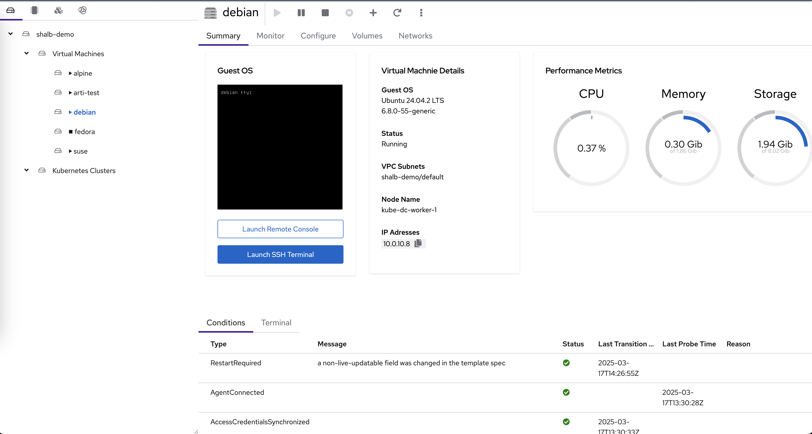

Virtualization (KubeVirt) ¶
Kube-DC leverages KubeVirt to provide powerful virtual machine capabilities alongside traditional container workloads. This document covers the virtualization architecture, features, and how VMs are managed within the platform.
Virtualization Architecture ¶
Kube-DC's virtualization layer is built on KubeVirt, which extends Kubernetes to support virtual machine workloads. This architecture enables consistent management of both containers and VMs through the same API and tooling.
graph TD
K8s[Kubernetes API] --> KV[KubeVirt Controller]
K8s --> CDI[Containerized Data Importer]
KV --> VMI[VM Instances]
CDI --> DV[Data Volumes]
VMI --> POD[VM Pods]
DV --> PVC[Persistent Volumes]
subgraph "VM Management"
KV
VMI
POD
end
subgraph "Storage Management"
CDI
DV
PVC
end
UI[Kube-DC Dashboard] --> K8s
CLI[kubectl/virtctl] --> K8sCore Components ¶
KubeVirt Controller ¶
The KubeVirt controller manages the lifecycle of virtual machines by:
- Translating VM specifications into Kubernetes resources
- Scheduling VMs on appropriate nodes
- Managing VM state (start, stop, pause, resume)
- Providing VM migration capabilities
- Handling VM monitoring and health checks
Containerized Data Importer (CDI) ¶
CDI handles storage provisioning for VMs by:
- Creating and managing Data Volumes
- Importing disk images from HTTP/S3 sources
- Converting disk formats as needed
- Cloning existing volumes
Data Volumes ¶
Data Volumes serve as the storage backbone for VMs, providing:
- Storage allocation for VM disks
- Integration with Kubernetes storage classes
- Automated provisioning and cleanup
VM Management in Kube-DC ¶
VM Creation and Configuration ¶
Kube-DC allows users to create VMs through YAML definitions or the web UI. VM configurations include:
Example VM Definition:
apiVersion: kubevirt.io/v1
kind: VirtualMachine
metadata:
name: ubuntu-vm
namespace: demo
spec:
running: true
template:
spec:
networks:
- name: vpc_net_0
multus:
default: true
networkName: default/ovn-demo
domain:
devices:
interfaces:
- name: vpc_net_0
bridge: {}
disks:
- disk:
bus: virtio
name: root-volume
cpu:
cores: 2
memory:
guest: 4G
volumes:
- dataVolume:
name: ubuntu-base-img
name: root-volume
Supported Operating Systems ¶
Kube-DC provides templates for a variety of operating systems:
- Ubuntu (20.04, 22.04, 24.04)
- Debian
- CentOS/RHEL
- Fedora
- Alpine Linux
- FreeBSD
- openSUSE
- Minimal images (cirros)
Network Integration ¶
VMs in Kube-DC are integrated with the same network architecture as containers:
- Each VM can connect to VPC networks via Multus CNI
- VMs receive IP addresses from the project's CIDR block
- Network policies apply to VMs just like containers
- VMs can use floating IPs and load balancer services
Storage Management ¶
Kube-DC provides flexible storage options for VMs:
- Support for multiple storage classes
- Persistent storage using Kubernetes PVCs
- Live volume resizing
- Volume snapshots and cloning
VM Customization ¶
VMs can be customized through cloud-init configurations:
cloudInitNoCloud:
userData: |-
#cloud-config
chpasswd: { expire: False }
password: securepassword
ssh_pwauth: True
package_update: true
package_upgrade: true
packages:
- qemu-guest-agent
runcmd:
- [ systemctl, start, qemu-guest-agent ]
This allows for: - Setting initial passwords - SSH key distribution - Software installation - Custom scripts execution - Network configuration
Health Monitoring ¶
VMs in Kube-DC support health checks through:
Health checks ensure: - VM is properly booted - Guest agent is responsive - Cloud-init has completed - Custom health check scripts pass
Web UI Management ¶
Kube-DC provides an intuitive web interface for VM management:

VM Dashboard Features ¶
The VM dashboard provides:
- VM Status Monitoring: Running status, uptime, and conditions
- Performance Metrics: Real-time CPU, memory, and storage usage
- VM Details: OS version, network configuration, and node placement
- Console Access: Direct web-based console access to VMs
- SSH Terminal: Direct SSH access from the browser
- Network Information: IP addresses and VPC subnet details
VM Lifecycle Management ¶
Through the UI, administrators and users can:
- Create VMs from templates or custom images
- Start, stop, pause, and restart VMs
- Adjust resource allocations (CPU, memory)
- Take snapshots for backup purposes
- Clone VMs to create new instances
- Migrate VMs between nodes
Advanced Features ¶
GPU Passthrough ¶
Kube-DC supports GPU passthrough for high-performance computing and AI workloads:
Live Migration ¶
VMs can be migrated between nodes without downtime:
VM Snapshots ¶
Kube-DC supports VM snapshots for point-in-time recovery:
apiVersion: snapshot.kubevirt.io/v1alpha1
kind: VirtualMachineSnapshot
metadata:
name: my-vm-snapshot
spec:
source:
apiGroup: kubevirt.io
kind: VirtualMachine
name: my-vm
VM Templates ¶
Organization administrators can create standardized VM templates for their users, ensuring consistent deployments and reducing configuration errors.
Integration with Multi-Tenancy ¶
VMs in Kube-DC operate within the same multi-tenant architecture as containers:
- VMs are created within specific projects
- Organization and project permissions control VM access
- Network isolation is enforced between projects
- VM metrics are included in project billing and quotas
Best Practices ¶
Resource Allocation ¶
- Allocate sufficient memory for the guest OS (minimum 1GB for most Linux distributions)
- Consider CPU overcommit ratios when planning node capacity
- Use appropriate storage classes for VM performance requirements
VM Optimization ¶
- Install guest agents for improved integration
- Use cloud-init for automated VM configuration
- Configure readiness probes for proper health monitoring
- Use virtio drivers for improved performance
Conclusion ¶
Kube-DC's integration of KubeVirt provides a seamless experience for managing both VMs and containers in a single platform. This unified approach simplifies infrastructure management, improves resource utilization, and enables hybrid application architectures that combine the benefits of both virtualization and containerization.